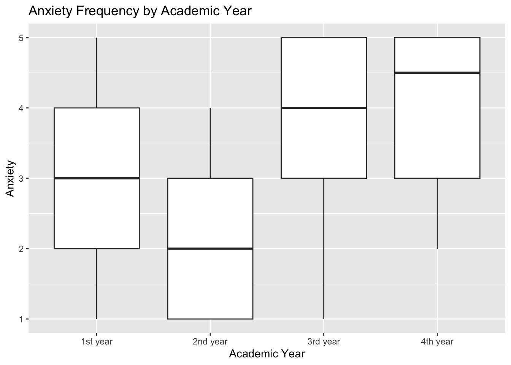

Education & Wellbeing
Averages
Overall
Code
# A tibble: 1 × 4
`mean(depression)` `mean(anxiety)` `mean(isolation)` `mean(academic_workload)`
<dbl> <dbl> <dbl> <dbl>
1 3.22 3.22 3.24 3.89Through this we find that the average depression and anxiety are above for 3.2, and mean isolation is around the same. Academci workload is percieved as high on average.
Gender
Code
# A tibble: 2 × 4
gender `mean(depression)` `mean(anxiety)` `mean(isolation)`
<chr> <dbl> <dbl> <dbl>
1 Female 3.58 3.54 3.42
2 Male 3.08 3.10 3.17Looking at the difference in gender we can see that there is small relationship with depression, anxiety and isolation levels. They tend to be higher in Female students in these majors.
Age
Code
# A tibble: 8 × 5
age `mean(depression)` `mean(anxiety)` `mean(isolation)`
<dbl> <dbl> <dbl> <dbl>
1 17 4.33 4.33 4.67
2 18 3.09 3.18 3.45
3 19 3.05 2.85 2.95
4 20 3.27 3.33 3.23
5 21 2.7 2.8 2.8
6 22 3.22 3.33 3.56
7 23 4 4 3.5
8 26 5 4.5 3.5
# ℹ 1 more variable: `mean(academic_workload)` <dbl>It is important to note there is only 2 students who are 26 and 2 students who are 23 so that is not enough data points for those ages. However looking at the other ages we can see that depression, anxiety and isolation tends to be all over the place, without a clear trend. This will either more looking into or we don’t look at it deeply.
Degree Major
Code
# A tibble: 4 × 5
degree_major `mean(depression)` `mean(anxiety)` `mean(isolation)`
<chr> <dbl> <dbl> <dbl>
1 Computer Science 3.5 3.68 3.47
2 Data Science 2.90 2.68 2.88
3 Information Technology 3.22 3.56 3.56
4 Software Engineering 4.33 4.33 4.67
# ℹ 1 more variable: `mean(academic_workload)` <dbl>Lookint at the different majors they surveyed we can see that academic workload is perceived as relatively high regardless of major, but general trend is Software Engineering being the hardest followed by Computer Science, Data Science and Information Technology. Software Engineering and Computer Science follows the same pattern, however information technology is higher on all mental health levels than data science.
Academic Year
Code
# A tibble: 4 × 5
academic_year `mean(depression)` `mean(anxiety)` `mean(isolation)`
<chr> <dbl> <dbl> <dbl>
1 1st year 3.32 3.12 3.5
2 2nd year 2.27 2.27 1.93
3 3rd year 3.39 3.61 3.46
4 4th year 3.8 3.9 3.7
# ℹ 1 more variable: `mean(academic_workload)` <dbl>Looking by year we can see that seniors have the highest in every category except workload, followed by juniors and then freshman most likley because they are transitioning to school followed by sophomores.
GPA
Code
# A tibble: 6 × 4
cgpa `mean(depression)` `mean(anxiety)` `mean(isolation)`
<chr> <dbl> <dbl> <dbl>
1 0.0-0.0 3 3.2 3.4
2 1.5-2.0 4.5 4 4.5
3 2.0-2.5 2.25 2.75 3.25
4 2.5-3.0 3.14 3.32 3.27
5 3.0-3.5 3.15 2.93 2.85
6 3.5-4.0 3.44 3.44 3.48It is important to note that 5 people have a cumulative GPA of 0.0 - 0.0 and only 2 students have a cumulative GPA of 1.5-2.0 which might skew those data points. Looking at GPA we ca see from 2.0 up there is a rough trend in increasing depression. When looking at anxiety there is roughly the same trend except people with a 3.0-3.5 cgpa tend to have a slightly lower anxiety level, maybe because its a good grade but they are not trying to be perfect? Isolation follows that same trend funnily enough.
Sports Engagement
Code
# A tibble: 4 × 4
sports_engagement `mean(depression)` `mean(anxiety)` `mean(isolation)`
<chr> <dbl> <dbl> <dbl>
1 1-3 times 3.04 3.42 3.08
2 4-6 times 2.09 2.09 2.18
3 7+ times 3.4 3.1 3.2
4 No Sports 3.57 3.43 3.62If you look at sports engagement there is a general trend the more they are engaged the less they feel depression, anxiety, and isolation. However once you get into doing sports 7+ times a week then it shoots up again, most likely because there is less time to spend doing other things.
Campus Discrimination
Code
# A tibble: 2 × 4
campus_discrimination `mean(depression)` `mean(anxiety)` `mean(isolation)`
<chr> <dbl> <dbl> <dbl>
1 No 3.06 3.09 3.12
2 Yes 3.68 3.59 3.59People who feel and are discriminated tend to have a higher depression, anxiety and isolation which makes sense.
Residental Status
Code
# A tibble: 2 × 4
residential_status `mean(depression)` `mean(anxiety)` `mean(isolation)`
<chr> <dbl> <dbl> <dbl>
1 Off-Campus 3.23 3.26 3.29
2 On-Campus 3.18 3.09 3.09Living on campus tends to decrease depression, anxiety and isolation but not a crazy amount.
Num Stress Relief activities
Code
# A tibble: 7 × 4
NumberActivities `mean(depression)` `mean(anxiety)` `mean(isolation)`
<dbl> <dbl> <dbl> <dbl>
1 0 4 4 4
2 1 3.41 3.33 3.64
3 2 3.2 3.07 2.87
4 3 2.89 3 2.79
5 4 3.25 3.62 3.25
6 5 3 2.67 3
7 6 2.5 3 2.5 Looking at the number of activities that people engage with we can see that there is a general trend that the more activities a person does the better they feel. It is important to note that the the category 0, is one person so is kind of skewed by that.
Anxiety and Depression by Academic year
Depression
Anxiety
Code

To begin exploring the relationships between mental health indicators and other variables, we examined how depression and anxiety levels vary across academic year. We observed elevated levels of both depression and anxiety among first-year students, followed by a noticeable dip in the second year, and then a steady rise through the third and fourth years. This pattern may reflect the initial transition-related stress experienced by first-year students, a temporary adjustment period in the second year, and then a gradual increase in academic pressure, workload, and future-oriented stress as students progress toward graduation.
Number of Activities and mental health outcomes
Code
MentalHealthSurvey |>
mutate(
NumberActivities =
case_when(
stress_relief_activities == "Nothing" ~ 0,
TRUE ~ str_count(stress_relief_activities, ",") + 1
)
) |>
mutate(
depression = as.character(depression)
) |>
group_by(NumberActivities) |>
ggplot(aes(x = depression, y = NumberActivities)) +
geom_boxplot() +
labs(x = "Depression", y = "Number of activities", title = "Number of Stress releifs activies influence on depression")
Code
MentalHealthSurvey |>
mutate(
NumberActivities =
case_when(
stress_relief_activities == "Nothing" ~ 0,
TRUE ~ str_count(stress_relief_activities, ",") + 1
)
) |>
mutate(
anxiety = as.character(anxiety)
) |>
group_by(NumberActivities) |>
ggplot(aes(x = anxiety, y = NumberActivities)) +
geom_boxplot() +
labs(x = "Anxiety", y = "Number of activities", title = "Number of Stress releifs activies influence on anxiety")
When examining the relationship between number of hobbies and mental health indicators, we observed a slight negative association between activities and depression levels—students who reported more hobbies tended to show lower levels of depression. However, this relationship was relatively weak and should be interpreted cautiously. In contrast, the number of activities showed no meaningful trend with anxiety, suggesting that hobbies may play a small protective role for depression but do not appear to influence anxiety levels in the same way.
Counting function
Calculating Percentages & creating data set
Code
Depression <- percent_calc(depression) |>
rename(depression = column_level)
Anxiety <- percent_calc(anxiety) |>
rename(anxiety = column_level)
Isolation <- percent_calc(isolation) |>
rename(isolation = column_level)
Workload <- percent_calc(academic_workload) |>
rename(academic_workload = column_level)
Pressure <- percent_calc(academic_pressure) |>
rename(academic_pressure = column_level)
Satisfaction <- percent_calc(study_satisfaction) |>
rename(study_satisfaction = column_level)
Insecurity <- percent_calc(future_insecurity) |>
rename(future_insecurity = column_level)
Organized_data <- left_join(Depression, Anxiety) |>
full_join(Isolation) |>
full_join(Workload) |>
full_join(Pressure) |>
full_join(Satisfaction) |>
full_join(Insecurity) |>
pivot_longer(names_to = "Metric", cols = c(depression, anxiety, isolation, academic_workload, academic_pressure, study_satisfaction, future_insecurity)) |>
mutate(
value =
case_when(
is.na(value) ~ 0,
TRUE ~ value
)) |>
mutate(
scale_system = factor(scale_system, levels = c("1", "2", "3", "4", "5")),
value = case_when(
scale_system %in% c("1", "2", "3") ~ -value,
TRUE ~ value
)
) |>
mutate(
value = round(value)
) |>
mutate(scale_system = factor(scale_system, levels = c("5", "4", "1", "2", "3")))
Organized_data$Metric <- recode(Organized_data$Metric,
"depression" = "Depression",
"anxiety" = "Anxiety",
"isolation" = "Isolation",
"academic_workload" = "Academic Workload",
"academic_pressure" = "Academic Pressure",
"study_satisfaction" = "Study Satisfaction",
"future_insecurity" = "Future Insecurity"
)In order to get the data that I wanted from the data set in the correct format for the graphic I had in mind I had to calculate for each individual variable I wanted to look at. Then I had to combine them into a dataset and pivot them, and then restructure large sections in order for it to show up exactly as I wanted. This part was edited a lot throughout the creation of the visualization.
Making Labels
Code
Organzied_Data_labs <- Organized_data |>
mutate(
scale_system = factor(scale_system, levels = c("4", "5", "1", "2", "3"))
) |>
group_by(Metric) |>
arrange(Metric, scale_system) |>
mutate(
pos = cumsum(value) - (0.5 * value),
pos = case_when(
(scale_system %in% c("1", "2", "3") & Metric == "Anxiety") ~ -pos - 8,
(scale_system %in% c("1", "2", "3") & Metric == "Depression") ~ -pos - 10,
(scale_system %in% c("1", "2", "3") & Metric == "Isolation") ~ -pos - 8,
(scale_system %in% c("2", "3") & Metric == "Academic Workload") ~ -pos + 38,
(scale_system %in% c("1", "2", "3") & Metric == "Academic Pressure") ~ -pos + 33,
(scale_system %in% c("1", "2", "3") & Metric == "Study Satisfaction") ~ -pos + 35,
(scale_system %in% c("1", "2", "3") & Metric == "Future Insecurity") ~ -pos - 24,
TRUE ~ pos
),
value = abs(value),
) |>
filter(value != 0) |>
mutate(
value = as.character(value),
value = paste0(value, "%")
)
desired_order <- c("Future Insecurity", "Study Satisfaction", "Academic Pressure", "Academic Workload", "Isolation", "Anxiety", "Depression")In order to get the numbers that hover over each part of the bar chart I had to create a separate dataset specifically for the geom_text. They then had to be moved around for each individual variable. It was hard to get precise through the math, so that is why there are “random” numbers amended, as I found that is what made them look the best.
Creating graphs
Code
ggplot(Organized_data, aes(x = factor(Metric, levels = desired_order), y = value, fill = scale_system)) +
geom_bar(stat = "identity", width = 0.7) +
geom_text(data = Organzied_Data_labs, aes(y = pos, label = value),
colour = "white",
size = 5, family = "RobotoCondensed", face = "bold") +
coord_flip() +
scale_fill_manual(
values = c("1" = "#f45b5b", "2" = "#f4a261", "3" = "gray70",
"4" = "#4ea8de", "5" = "#0077b6"),
limits = c("1", "2", "3", "4", "5")
) +
scale_y_continuous(labels = abs) +
labs(
title = "Students Rating of Mental Health and College Factors on a Scale of 1-5",
fill = "Level:",
y = NULL,
x = NULL
) +
theme_minimal(base_size = 14) +
theme(
panel.grid.major.y = element_blank(),
panel.grid.minor = element_blank(),
axis.title.y = element_blank(),
legend.position = "top",
plot.title = element_text(size = 20, face = "bold", color = "#2a4d69", hjust = 0.5, family = "RobotoCondensed"),
plot.margin = unit(c(1, 2, 1, 1.5), "cm"),
axis.text.y = element_text(size = 15, family = "RobotoCondensed", face = "bold"),
legend.text = element_text(family = "RobotoCondensed", size = 14),
legend.title = element_text(family = "RobotoCondensed", size = 15)
) ![A bar graph demonstrating what percentage of students rated each of the following categories on a scale of 1-5 in realtion to school. For Isolation, 16% said 1, 15% said 2, 23% said 3 (or neutral), 21% said 4, and 25% said 5. For Depression 15% of students said 1, 16% of students said 2, 24% of students said 3, 22% of students said 4, and 23% of students said 5. For Anxiety, 11% of students said 1, 21% of students said 2, 22% of students said 3, 26% of students said 4, and 20% of students said 5. In Academic workload, no students said it was 1 level difficulty, only 6% said 2, 25% said 3, while 44% said 4 and 25% said 5. Lastly 6% of students said academic pressure was a 1, 7% said 2, 21% said 3, 37% said 4, and 30% said 5.](index_files/figure-html/unnamed-chunk-20-1.png)
Code
corr_matrix <- cor(MentalHealthSurvey %>%
select(academic_workload, academic_pressure, study_satisfaction,
depression, anxiety, isolation, future_insecurity),
use = "pairwise.complete.obs", method = "pearson")
ggcorrplot(corr_matrix,
lab = TRUE, lab_size = 3,
hc.order = TRUE,
type = "lower") +
theme(
axis.text.x = element_text(angle = 45, hjust = 1),
axis.text.y = element_text(angle = 0)
)
This plot shows a correlation heatmap examining how academic workload and perceived pressure relate to different mental-health outcomes among mainly stem students. The warmer colors represent stronger positive correlations, meaning that as one variable increases, the other tends to increase as well. Cooler purple colors indicate negative correlations, meaning that as one increases, the other tends to decrease. One of the strongest relationships we found was between depression and anxiety, with a correlation of .84, suggesting these experiences often occur together. We also see that academic workload and academic pressure are moderately correlated with depression, anxiety, and feelings of isolation, supporting our hypothesis that heavier academic stress is associated with poorer well-being, but maybe not as strongly as originally believed. On the opposite side, study satisfaction is negatively correlated with all mental-health outcomes. This suggests that students who feel more satisfied and supported in their studies tend to report fewer negative well-being symptoms. Overall, these patterns indicate a clear connection between academic stress and mental health in this student population, and they help us identify which variables may be most important for further analysis.